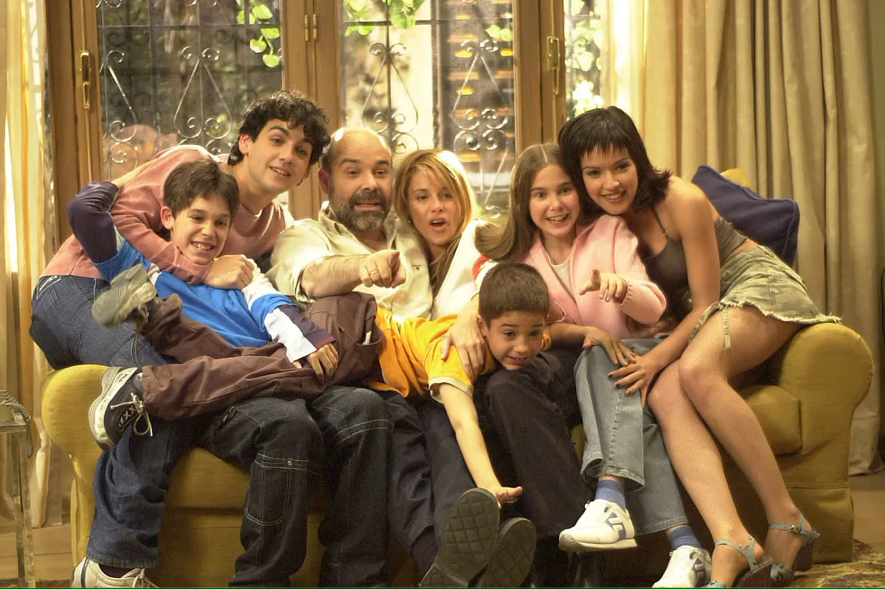

Bienvenido al Blog de Series Españolas de Comedia
Especialmente dedicado a las series emitidas por Factoría de Ficción (FDF)
<h2>Series destacadas</h2> <ul> <li><p>Los Serrano</p> <li><p>Aída</p> <li><p>La que se avecina</p> </ul> </nav> <h2>Comparativa de Series Españolas de Comedia</h2> <table border="1" cellpadding="5" cellspacing="0"> <tr> <th>Serie</th> <th>Año de estreno</th> <th>Número de episodios</th> <th>Mi favorita</th> </tr> <tr> <td>Los Serrano</td> <td>2003</td> <td>147</td> <td></td> </tr> <tr> <td>Aída</td> <td>2005</td> <td>237</td> <td></td> </tr> <tr> <td>La que se avecina</td> <td>2007</td> <td>199</td> <td>⭐</td> </tr> </table> <br></br> <hr> <h2>Los Serrano</h2>  <p> <strong>Los Serrano</strong> es una comedia familiar española que narra la vida de la familia Serrano, sus relaciones y las situaciones cotidianas del barrio. La serie combina humor con momentos emotivos y fue un éxito en su época. La serie fue pionera en introducir nuevo modelo familiar además de ser topo y adaptarse a nuevas corrientes sociales. El origen de la trama se centra en la convivencia y las diferencias entre los hombres y las mujeres de una misma casa. </p> <p> <a href="html/blog los serrano.html">Ir a la página de Los Serrano</a> </p> <hr> <h2>Aída</h2> <img src="images/logoaida.jpg" width="300" height="200" alt="Aída"> <p> <strong>Aída</strong> es un spin-off de <em>7 vidas</em> que sigue la vida de Aída García y su familia en el barrio de Esperanza Sur. La serie mezcla sátira social con situaciones cómicas del día a día. Como novedad y tras cuatro años de líder en la noche de los domingos, Telecinco decide, tras unos reajustes de programación, que la serie se traslade al horario central del martes, en sustitución de Gran Hermano, entre el 13 de enero y el 24 de febrero de 2009 para volver a su antigua ubicación en el horario central de los domingos a partir del 1 de marzo. </p> <p> <a href="html/blog aida.html">Ir a la página de Aída</a> </p> <hr> <h2>La que se avecina</h2> <p> <strong>La que se avecina</strong> es una serie de comedia que retrata la vida de los vecinos de un edificio. Humor, enredos y personajes excéntricos hacen de esta serie un referente de las comedias españolas. El 13 de diciembre de 2006, Telecinco presentó en rueda de prensa al equipo de la serie y confirmó que su estreno en principio tendría lugar en el primer trimestre de 2007. La comedia se presentó meses después, el 19 de abril de 2007, y días más tarde comenzó su emisión[10] en la franja del domingo. El 24 de noviembre de 2014, la serie llegó a su capítulo número 100. </p> <p> <a href="html/blog lqsa.html">Ir a la página de La que se avecina</a> </p> <form> <div> <label for="usuario">Nombre:</label><br /> <input type="text" id="usuario" name="usuario" /> </div> <div> <label for="email">Email:</label><br /> <input type="email" id="email" name="email" /> </div> <div> <label for="pass">Contraseña:</label><br /> <input type="password" id="pass" name="pass" /> </div> </br> <div> <label for="fecha">Fecha de nacimiento:</label><br /> <input type="date" id="fecha" name="fecha" /> </div> </br> <div> <label>Página que más te ha gustado:</label><br /> <input type="radio" id="pc" name="plataforma" value="PC" /> <label for="pc">LQSA</label> <input type="radio" id="switch" name="plataforma" value="Switch" /> <label for="switch">Los serrano</label> <input type="radio" id="mobile" name="plataforma" value="Mobile" /> <label for="mobile">Aída</label> </div> </br> <div> <label for="nivel">Seleccione nivel de satisfacción:</label><br /> <select id="nivel" name="nivel"> <option value="">Selecciona</option> <option value="Poco">Poco</option> <option value="Intermedio">Intermedio</option> <option value="Mucho">Mucho</option> </select> </div> </br> <div> <label for="comentarios">Comentarios:</label><br /> <textarea id="comentarios" name="comentarios" rows="3" cols="30"></textarea> </div> </br> <div> <button type="submit">Enviar Inscripción</button> </div> </form> <hr> <footer> <h2>Sobre este blog</h2> <p>Este blog está dedicado a las series de comedia españolas de Factoría de Ficción, ofreciendo información, personajes, temporadas y enlaces para ver sus páginas web.</p> <p>Blog de Series Españolas de comedia.</p> </footer> </body> </html>